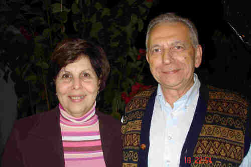
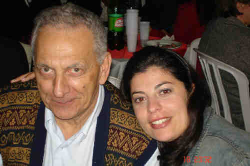

Carlos Antônio Natrieli
- Nascido em: 30 Set 1942
- Casamento: Geralda Dias Ribeiro em 4 Fev 1972

 Notas Gerais: Notas Gerais:
A seguir, vamos expor o que seu neto, Carlos Antônio Natrieli (Pio) lembrou de seu avô e sua família:
"- O que a família contava é que vieram de Ribeirão Preto para São Paulo, depois meu avô foi trabalhar numa fábrica de pisos e ladrilhos em Santos, aí voltou, moraram na rua do Oratório, depois tiveram padaria e açougue, na região da Moóca, Vila Prudente, até depois eles virem aqui, no Brooklin, quando começou o negócio com olaria.
Ficaram primeiro aqui no Brooklin e depois para o Morumbi, quando desapropriaram da Light, ele comprou o terreno que, no futuro, se tornaria o colégio Pio XII; montou as olarias lá, e fez a casa na Av. Morumbi.
Eles mudaram para lá, eu acho que, em 38 , porque meu pai namorava com a minha mãe.
Do meu avô Ercole, o percurso que ele teve foi mais ou menos esse.
No Morumbi, eu tive um relacionamento e um contato com ele direto, espetacular. Nem os filhos tiveram esse contato, porque eu era criança, disponível, e interessado em saber, inclusive por eu ter facilidade de assimilar essas coisas práticas. Nesse contato com o vovô Ercole, ele me ensinava. Eu vejo o vovô como um professor, não de coisas de escola, mas de coisas que a gente faz na vida. É o brinquedo, é o conserto de um equipamento.
Do vovô, ele tinha uma oficina bacana, então eu fazia carrinhos imitando as carroças da olaria, com as ferramentas dele, e ele me ensinava a usar o arco de pua, como trabalhar, como pregar, como serrar, e eu fazia, eu via as caçambas na olaria, eu usava dobradiça e fazia basculante, as carrocinhas e usava o cachorro, em vez do cavalo ou do burro. Era uma coisa fantástica, e os primos, que iam em casa, admiravam.
E tudo graças aos ensinamentos do vovô.
Outra coisa, o vovô Ercole me ensinou a apanhar frutas. Ele me ensinou que eu não devia deixar bater a fruta.
Ele tinha um pomar muito grande, eram 3.000 m2 e tinha frutas , goiabas, laranjas, tudo, tudo, tudo, maçã, abacate. Tinha um abacateiro no galinheiro, que eu subia e levava comigo, uma corda que tinha numa das pontas um saco preso, e, na outra ponta, eu pegava e amarrava num gancho que era essa vareta da cremona de janela, eu pegava e laçava o galho, puxava para ficar mais próximo do centro, aí apanhava as frutas e colocava no saco sem bater, e depois descia o saco com a corda escorregando.
A mandioca, eu arrancava e ia devagar porque ele não admitia que quebrasse um ramo. E uma coisa que era bacana, quando o pessoal ia visitar (o pessoal visitava muito o vovô e a vovó), as primas de Pinheiros, a tia Vincenza, as outras primas lá de Pinheiros, e sempre que eles iam lá em casa, sempre ganhavam alguma coisa , ou era abacate, ou mandioca, ou uma outra fruta, então ele chegava e falava:
- Vai arrancar ......
A satisfação dele era servir. Ele dava festas, então eu fui aprendendo a plantar mandioca , o milho, a colher frutas.
Outra coisa foi com relação à criação. Eu, com 14 anos, já tinha a capacidade de executar a seqüência desde matar até limpar, esquartejar um cabrito, uma leitoa, frango.
Quando matavam um animal maior (porco, cabrito), os dois sempre estavam juntos (Ercole e Nunzio).
O tio Nunzio matava o porco, aí já eram os porcos que eram para engorda, e sempre matavam dois, um era para distribuir para a família, faziam o mutirão, então eram os ajudantes de caminhão, motorista.
O tio Nunzio era especialista em matar, então aí eu ficava curioso em ver o resultado quando abria o porco, para saber se ele tinha acertado o coração; e eu também, depois que eu comecei a matar, não via a hora de abrir para ver se tinha conseguido acertar. O cabrito já era outro processo.
O vovô me ensinou que, depois de matar o cabrito, era necessário inflá-lo, para descolar a pele da carne. Enfiava uma varinha num corte que era feito na perna do animal, (as vezes usava até canudo da folha do mamoeiro. Tinha que enfiar e assoprar. Doía as bochechas, de tanta força que fazia.
Essas coisas ele me deixou de lembrança , recordar isso me emociona, porque para mim foi muito importante, eu tive a oportunidade de aprender essas coisas de um convívio estritamente pessoal.
Ele era uma pessoa tranqüila, amorosa, e o prazer era ver os outros contentes. Não havia quem não fosse lá em casa que não levava alguma coisa.
Eu tratava dos porcos também , a batata doce cozinhava. Não é que cozinhava como lavagem, junto com o resto de comida não, cozinhava a parte que as vezes eu até comia. Tinha também umas espigas de milho branco que ele plantava, que também era feita a mesma coisa.
Meu avô, na cozinha, ele não fazia, ele aprovava, se estava bom ou não, ele orientava, e a vovó Maria também foi uma companheira fantástica.
As pessoas iam lá em casa pedir conselho para a vovó Maria. Era uma pessoa que tinha uma seriedade fantástica, muito querida.
O vovô Ercole gostava do vinho e, às vezes, ficava exaltado, principalmente na companhia do tio Nunzio. Ele sozinho tomava o seu vinho. Não era tanto, mas quando estava junto com o Nunzio, parece que a dose era maior, então ele explodia. A minha vó ficava serena, calma, não falava nada porque ele estava um pouco alterado, aí depois de passar a "alteração", ela pegava e falava com ele e sempre ganhava.
Eu estou vendo quanto é importante isso hoje, de ficar calado, de esperar o momento que a pessoa fique tranqüila para você pegar e fazer, comentar sobre alguma coisa. Inclusive, determinadas perguntas que a gente acha maldosas, se a pessoa faz querendo jogar uma isca, coisa que eu era muito ingênuo, pegava. Hoje eu percebo que se a gente tiver tranqüilidade e pensar um pouco, a gente não responde a pergunta, a pessoa torna a perguntar e você não responde, a pessoa fica completamente desarmada, e até envergonhada.
Então esse convívio com os meus avós, com meu pai (fomos grandes companheiros), do tio Roque também (desde a época da olaria, quando ele passava e me levava nas olarias com ele), fez com que eu, aos 13 anos já dirigisse.
Os amigos e parentes que iam para a casa do vovô no Morumbi, tanto de bonde, descendo no Aleotti, ou de ônibus descendo na Av. Santo Amaro, tinham que pegar táxi. Eles iam mas não podiam voltar.
Se meu pai estivesse em casa, ele até trazia, mas eu, com 7 ou 8 anos. acompanhava meu pai, e ficava do lado dele na direção. Depois, ele me deu o acelerador, o breque. Aí, eu ainda pequeno, já dirigia ao lado dele.
Com 13 anos, ele já me deu o carro, eu ia nas olarias, eu ia para Campo Limpo, a lagoa. Com 14, 15 anos, não tinha tanto movimento, não tinha guardas, então eu aprendi a dirigir automóvel.
Quando os meus parentes iam nos visitar no Morumbi, eles mandavam levar a prima até o ponto do ônibus, lá no Brooklin. Nossa, para mim era uma maravilha!
Aos 16 anos, meu pai estava terminando de montar a olaria no Campo Limpo, eu peguei o caminhão que tinha disponível e fui lá, aplainar o lugar dos terrenos da olaria.
Com 17 anos, meu pai me arrendou uma olaria, montei um porto de areia, então comecei a trabalhar cedo. Aí foi desenvolvendo, e as coisas mudando até o ponto de eu retornar aos estudos, parar de trabalhar e a fazer a Faculdade. Aí montei o escritório aqui, abri em 70; eu ainda estava no 2° ano da Faculdade. Em 72, lançamos o loteamento e fui adquirindo, aos poucos, a confiança dos parentes. Isso me deixa muito feliz pela confiança que o pessoal teve, desde o meu início até hoje.
Com relação ao trabalho, eu tive toda e total confiança dos meus pais e dos meus irmãos, ao dirigir o patrimônio que eles já tinham iniciado, além de transformar, remodelar e fazer algumas transformações.
Até hoje eu administro. Quando exponho alguma coisa para ser apreciada, acaba sendo aquela pergunta:
- O que você acha que é melhor?
E muitas coisas.
Você faz! Depois, você fala!
É uma confiança que, para mim traz muita recompensa nesse relacionamento.
Na culinária, a vó Maria era fantástica. A paciência que ela fazia as coisas. A gente vê que ela fazia com amor. Eu aprendi com a vovó a qualidade dos pratos e das comidas e com o vovô Ercole, a ser o observador e palpiteiro:
- Mais assim, mais assado!
Com esse aprendizado e essa convivência, quando a Geralda começou a cozinhar, eu ia dando palpites.
Hoje, nós fazemos uma feijoada, que foi uma das primeiras a ser escaldada, eliminando o excesso de gorduras, pré-fritando determinadas partes dos ingredientes e outros tratamentos para que fique mais leve.
Eu lembro a delícia que era o minestrone que a vovó fazia, era batata doce, o macarrão rigatoni, a escarola, o feijão , aquela sopa meio agridoce por causa da batata doce. Aquilo era fantástico.
A polpeta eu aprendi a fazer também.
Eu gosto muito e faço a alichela, a beringela, o pimentão.
Tinha as comidas típicas para cada ocasião: Natal a Páscoa. Então, foi gostoso eu conviver e aprender a viver isso aí da infância e, depois, o meu pai resgatando, relembrando tudo novamente.
Da minha mãe, lembro que ela era uma companheira fantástica, com assistência aos filhos, muito calma e participativa.
Era professora particular, minha mãe auxiliava nas lições; foi uma companheira inclusive no trabalho de meu pai, porque ele foi um grande fornecedor de areia, tijolos, pedras e minha mãe fazia a marcação do movimento diário. Até na época do lampião, vinham os vales, a maioria eram vales, os funcionários da olaria, os caminhões. Ela fazia a marcação porque tinha outros que faziam carretos também.
Minha mãe foi essa companheira, no trabalho e na família.
Uma coisa que eu admiro do meu pai, foi ele, a partir de 1945 ou 46, conseguir tirar 21 dias de férias todos os anos, para passar a temporada em Poços de Caldas.
Passava o Natal, passava o réveillon. No primeiro sábado, ele pegava a família, ficava num hotel, às vezes levava até a Tina e a Ciata, ( o hotel era sempre o mesmo, hotel Paulista ).
Esse foi outro momento de convívio com o meu pai, porque a gente ia nas termas, tomava os banhos, aí tinha os passeios que a gente ia fazer na chácara , era gostoso.
Em janeiro, é época do figo, da uva, do pêssego, ocasião que nós íamos passar a tarde nas chácaras, comendo as frutas. Tinha o dia que a gente ia passear a cavalo.
Comecei com o carneirinho, depois o cavalinho, depois o cavalo, aí Boate do Palace. Aí, com 15 anos, já freqüentava a Boate. Não era aquela Boate, era um salão de festas, e ia as tias, primas, as amigas. Então eu tive, desde a infância até moço, o convívio com a família e usufruí sempre dessas amizades.
Isto foi até meu pai se aposentar, em 72. Quando ele passou a batuta, ele ainda não tinha 53 anos. Aí, ele ia para Poços de Caldas e ficava 3 meses . E outra coisa que eu participei com meu pai foi o aprendizado do tênis.
Nós entramos no Banespa e começamos a aprender tênis juntos. Depois, eu parei e ele continuou. Aí, depois, eu recomecei, ai desenvolvi mais em tudo.
O meu pai, no jogo, foi um professor fantástico. Ele me deu de Natal, quando eu tinha uns 8 anos mais ou menos, uma mesa de ping-pong . Eu era pequeno, então a gente ia jogar ping-pong e ele não dava moleza de dar bolinha de bandeja não. Ele jogava esforçando, com isso, eu acabei aprendendo e desenvolvendo . Formamos uma equipe, um timezinho, PENA (Petrella e Natrielli), e nós disputamos alguns torneios. Quem participava era o Caetano, o Núncio, o Nenê, o Nuncinho, o meu pai, o Carlinhos.
Outra coisa muito bacana na família, que eu lembro desde criancinha, foi a participação nas festas, que era no vovô Carlos, na Saracura, no Morumbi, e no tio Nunzio, aqui no Brooklin.
Eram as três famílias super unidas! A gente com 10, 12 anos, dançava, com prima, com tia, as empregadas faziam parte da família, não eram empregadas, eram mais uma da família e foi aí que eu fui desenvolvendo o gosto pela dança. E hoje, a dança me dá um imenso prazer".
Notas de Pesquisa:
Carlos Antonio Natrieli
Filho de Antonio Natrielli, neto paterno de Carlos Natrielli e neto materno de Ercole Petrella.
Origem do meu nome.
"Carlos em homenagem a meu avô paterno que aliás, também foi homenageado pelos pais de meu primo que nascendo primeiro do que eu, acabou ficando com o nome dele. Carlos Natrielli Neto.
N.as. É costume do povo italiano dar ao primeiro filho varão o nome do seu avô paterno, assegurando com isso, o direito da herança familiar. (As propriedades antigamente passavam para o primogênito).
"Antonio" nome de meu pai.
Meu sobrenome Natrieli têm apenas um L por distração do escrevente que lavrou a certidão de nascimento.
Desde o meu nascimento meus pais me chamavam de Nenê.
O interessante, foi que com o meu primo Carlos Natrielli Neto aconteceu o mesmo. Desde crianç e até hoje sempre foi chamado de Nenê.
Quando eu era pequeno, ao falar por telefone com meu pai sempre dizia "PAPE, PIO DOCE QUÉ" que na realidade, significava "papai eu quero doce" (primeiro sintoma de dislexia).
Não sei o porque de me auto-apelidar de Pio. A única coisa que percebi, foi que Pio era o nome do Papa da época: Papa Pio XII.
Na realidade, não sei até hoje, como justificar o gosto por Pio.
Meu tio Arnaldo (irmão de meu pai) tinha a mania de colocar apelido em todos. Apelidos que pegavam, diga-se de passagem. O meu ficou "Papé Pio doce qué".
Por ser muito comprido, foi abrevido tornando-se apenas Pio, que se perpetuou ao longo dos anos e persiste até hoje, dentro de nossa família.
Gostei, pois não havia em nosso relacionamento, ninguém com nome ou apelido de Pio.
Voltando ao "Natrielli, com um L só, no primeiro período de escola, lembro-me que as professoras falavam meu nome completo quando faziam a chamada.
Até o terceiro ano escrevia meu "Natrielli com 2 L", até que minha professora Lizandra chamou-me a atenção que era apenas um L.
Com um ou com dois "L", foi como Natrielli que no período do ginásio até a faculdade, meus colegas e professores me chamavam.
Como "Pio" na família e "Natrielli" no meio social, o "Carlos Antonio"ficou esquecido, exceto por minha tia Conceição (irmã de meu pai) que desde criança e até hoje me chama de Carlos Antonio.
De uns tempos para cá, no entanto, percebi que também meu primo Carlos Vian e mais tarde, Roberval (marido de minha prima Dinorah) me chamam de Carlos Antonio.
Por Carlos, me chamam a tia Eloisa, Miguel Damiani e a Neuza.
Desculpem se não estiver fazendo justiça a todos que me chamam assim.
Quando ainda cursava a faculdade abri o escritório e foi sugerido pelo Dr. Plinio Schimidt que colocasse Natrieli, pois tinha bom conceito.
Comentando com uma colega de faculdade, Maria Lúcia, ela achava que Natrielli era bonito, soava bem e era agradável.
Daí Natrieli Administração de Bens.
Na atividade profissional intensificou Carlos e Natrieli. Alguns chamavam-me até de Carlinhos, como meu amigo Vitantonio e o vizinho Álvaro.
Quando comecei a namorar a Geralda, ela, seus parentes e amigos me chamavam por Carlos, e por Carlão as vezes o Edson e o Luiz Kachan.
Depois de certo tempo, Geralda e eu, nos tratávamos como querido Carlos, querida Geralda até que ficou apenas o carinhoso "Qui".
No entanto, quando ela está zangada comigo vem um CARLOS, "arrepiado"... ainda bem, que é durante muito pouco tempo.
Uma coisa curiosa foi a surpresa, quando da ocasião da entrega de nosso convite de casamentoaos parentes e amigos pois não imaginavam que meu nome era Carlos Antonio. De onde vem o Pio?
Em 1999 consultei Ana Sílvia, psicopedagoga, que logo no início do tratamento, sugeriu-me que mudasse muitas coisas na minha vida.
Após algumas sessões perguntou-me se conhecia o AA (alcoólicos anônimos).
Após algumas semanas fui a primeira reunião de um grupo que ingressei.
Entregaram-me uma ficha, que tinha apenas com valor simbólico, um cartão, chamado de certidão de renascimento e nele dei meu nome Carlos Antonio. Isto foi em 03 de maio de 1999, fiz meu depoimento muito emocionado e depois disseram-me que naquela noite eu era a pessoa mais importante.
No AA meu nome é Carlos Antonio.
Há um tempo atrás, em conversa com Miguel Damiani falando sobre meu nome e apelido sugeriu que escrevesse para colocar no site da Família Petrella, reiterado quando Felipe (filho do Emílio Vian Vieira), na festa do dia 18 de junho de 2005, em comemoração ao aniversário da prima Regina Banzoli perguntou sobre meu apelido.
Seja qual for a forma que me tratam, sinto-me feliz por me chamarem pelo nome ou apelido, mas principalmente, honrado por pertencer à essa Família tão maravilhosa.
Eventos notáveis em Sua vida foram:

• fotos: Geralda_e_Carlos.

• fotos: Carlos Antônio e Ana Virgínia.
Carlos casad[:o::a] Geralda Dias Ribeiro, filha de Durval Ribeiro e Henriqueta Dias, em 4 Fev 1972. (Geralda Dias Ribeiro nasceu em em 25 Jun 1940 em Barretos/Sp.)
|